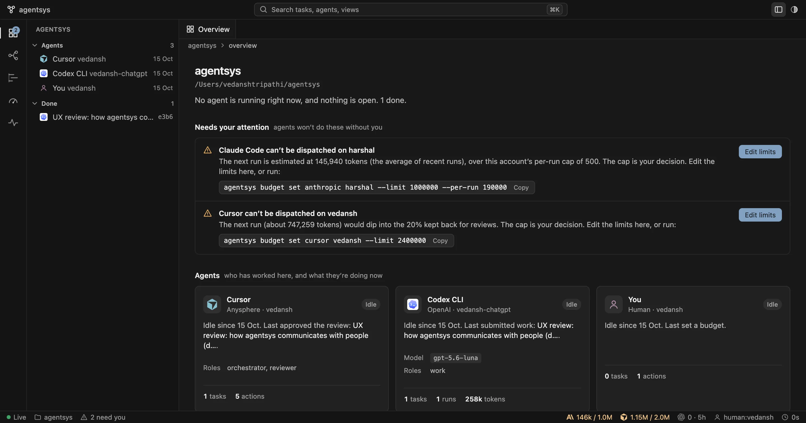

Verified handoffs
between every
coding agent.
One local task store for Cursor, Claude Code, Codex, Grok, and you. Work isn't done until a check passes and a different identity reviews it. Merges still need a human.

Bring your own CLI
agentsys doesn't resell, pool, or rotate tokens. It drives the CLIs you're already signed in to and counts usage per provider account, exactly as each one reports it.
Add a dark-mode toggleAccepted
scope · src/settings/*passsyntax · py_compile, bun buildpasssecrets · added linespasscheck · npm testpassreview · claude:bob:reviewerapproveagentsys resumeRequest merge
Nothing merges on an agent's word.
Every implementation task runs in its own git worktree and branch. agentsys checks the diff, a different identity reviews it, and the merge waits for a human.
- Scope, syntax, and secret scans on every diff
- Your own
--checkcommands run in the worktree - Reviewers can't approve work they touched
- Merges need approval from a
human:actor
Open source
Don't trust it. Verify it.
~/code
$git clone https://github.com/theDeviser/agentsys.git
$agentsys init --as human:you
$agentsys pipeline research-implement "Add rate limits" --path src/*
t-a1b2c3d4 research · t-e5f6g7h8 implement (depends on research)
$agentsys dispatch t-a1b2c3d4 --adapter auto
routed to claude/you (research rule)
$agentsys verify t-e5f6g7h8
scope pass · checks pass
$agentsys review t-e5f6g7h8 approve --as claude:you:work
refused: same harness as author
$agentsys merge t-e5f6g7h8 --as claude:peer:reviewer
refused: needs human: approval
$agentsys verify-log
chain OK
$
- Zero dependencies. Python 3.9+ standard library, SQLite, and git.
- Tamper-evident. Every state change is a hash-chained event that
verify-logcan replay. - Crash-safe. Claims are leases. A dead agent's task returns to the queue with a resume brief.
Your agents deserve a second opinion.
agentsys is free, MIT licensed, and runs entirely on your machine. Clone it, run agentsys init, and point every agent at one task store.
git clone https://github.com/theDeviser/agentsys.git ~/agentsys && export PATH="$HOME/agentsys/bin:$PATH"